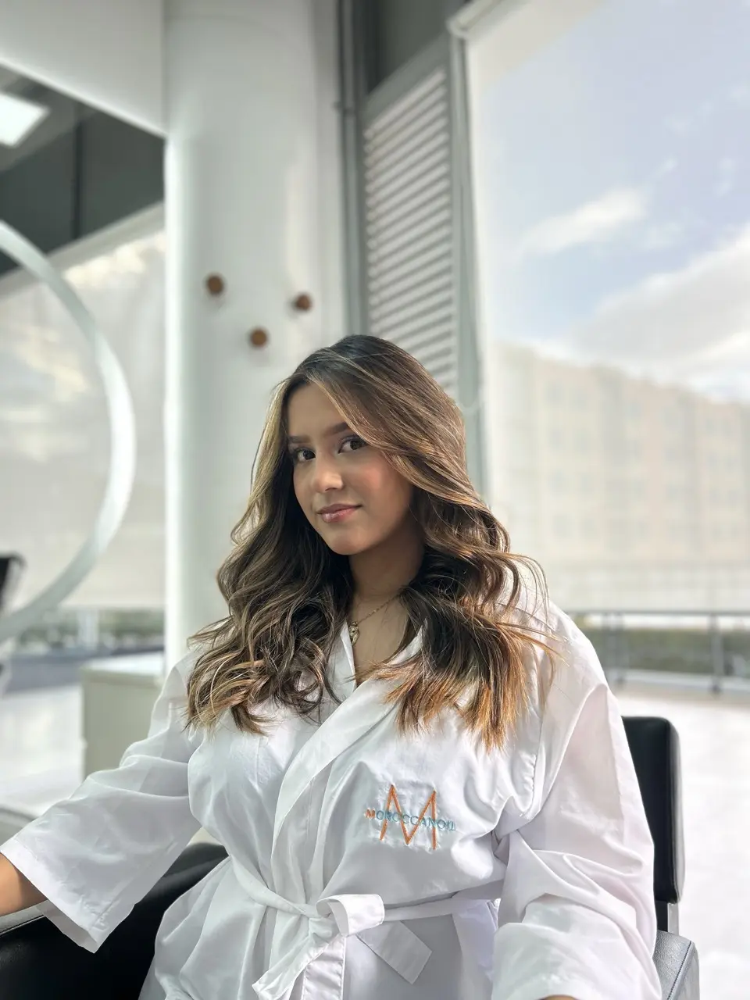

Barbería y Estilismo Masculino en Chía
Estilo masculino, cortes degradados y ritual de barba para el hombre moderno.
Complementa tu Look
Vive la experiencia de una barbería clásica con toques modernos. Cortes de cabello, arreglo de barba y servicios diseñados exclusivamente para caballeros.
Nuestros Trabajos

Preguntas Frecuentes
¿Ofrecen servicios de peluquería y barbería para hombres cerca de mí?
Sí, contamos con una zona exclusiva de barbería en Chía para hombres, ofreciendo cortes modernos y arreglo de barba, muy cerca de ti y de sectores como Fontanar.
¿Dónde están ubicados? ¿Están cerca de Cajicá?
Estamos ubicados estratégicamente en los bajos del Hotel Ibis, en el Kilómetro 2 vía Chía - Cajicá. Somos tu peluquería ideal si buscas servicio premium en este sector, muy cerca de Fontanar y Centro Chía.